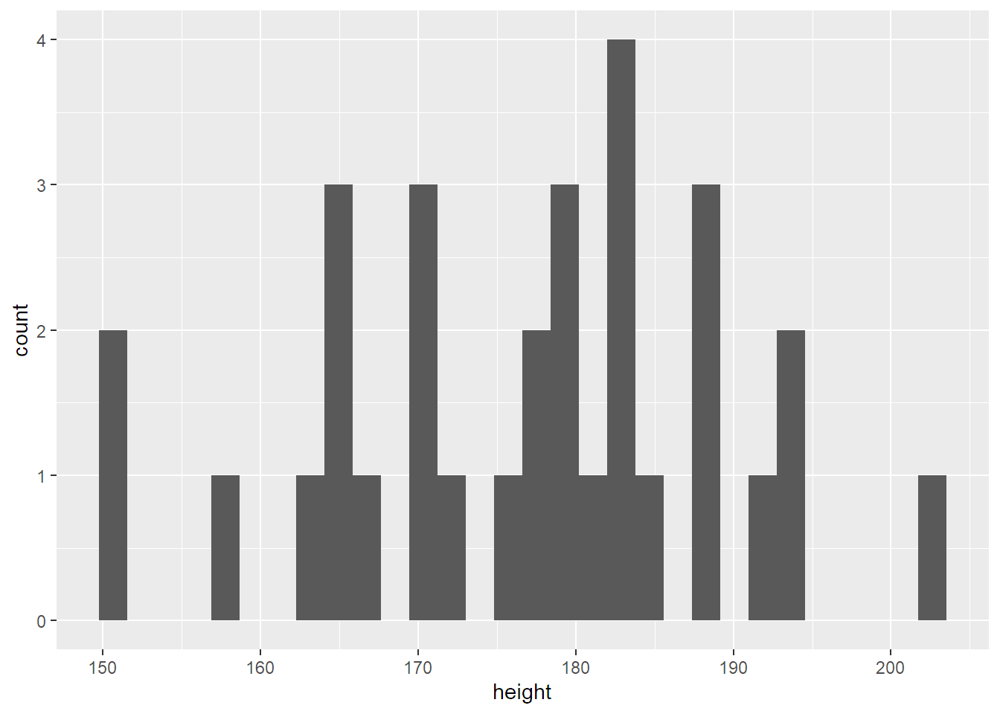
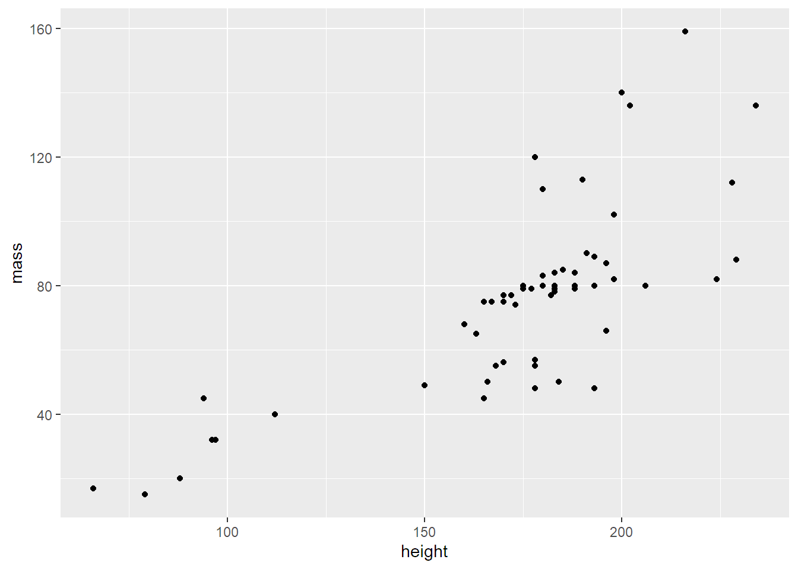
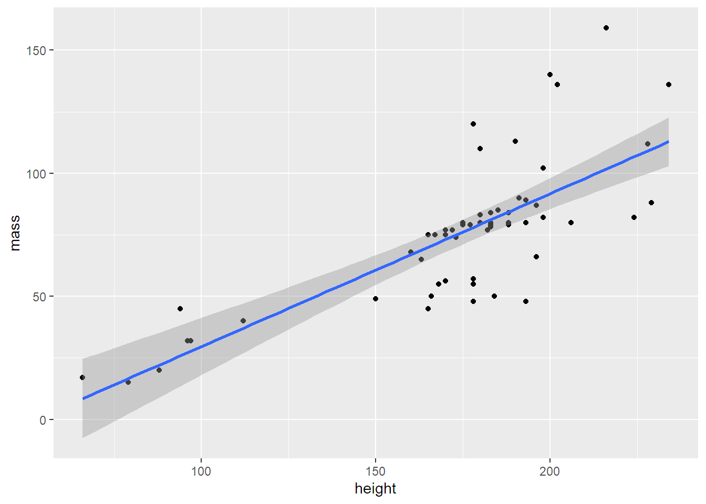
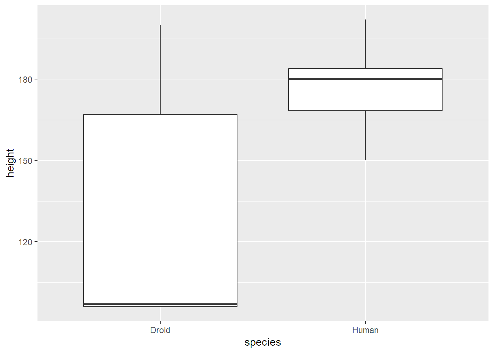

6 Grafy a vizualizace
Grafy a vizualizace jdou dělat v R mnoha způsoby. Něco je už v základním R a k tomu jsou stovky různých balíčků. Já ale používám skoro na všechno balíček ggplot2, který patří k nejpopulárnějším.
Upřímně, ggplot2 je dost komplikovaný, umí toho strašně moc a mě se nechce to všechno podrobně vysvětlovat. Vlastně by to ani nebylo v souladu se záměrem knížky, protože vás mám naučit hlavně to, co jde i v Excelu. A Excel, pokud jde o grafy, umí jen pár procent toho co ggplot2.
Takže spíš než teoretický výklad, vám ukážu několik nejtypičtějších příkladů. Nebudu je podrobně vysvětlovat, takže buď je jenom podle svých potřeb opisujte (i s tím si vystačíte dost dlouho), nebo si ggplot2 důkladněji nastudujte z jiných zdrojů.
Připojím knihovnu (ve skutečnosti není třeba, je už v tidyverse) a dáme se do toho.
library(ggplot2)6.1 Histogram
Histogram vám rychle ukáže rozložení kontinuálních (číselných) hodnot. Bývá prvním grafem, na který se u takového typu dat dívám.
V minulé kapitole jsme pracovali s datasetem starwars, tak u něj ještě chvíli zůstanu. Např. mě zajímá rozložení výšky postav:
starwars |>
ggplot(aes(x = height)) +
geom_histogram()## `stat_bin()` using `bins = 30`. Pick better value with `binwidth`.## Warning: Removed 6 rows containing non-finite values (stat_bin).
Ani to nebolelo, co?
Funkci ggplot můžu kombinovat i s libovolnou předešlou manipulací dat. Takže kdybych chtěl jen rozložení výšky lidí, udělám to takhle:
starwars |>
filter(species == "Human") |>
ggplot(aes(x = height)) +
geom_histogram()## `stat_bin()` using `bins = 30`. Pick better value with `binwidth`.## Warning: Removed 4 rows containing non-finite values (stat_bin).6.2 Scatter plot neboli bodový graf
Scatter plot pomáhá odhalit korelace mezi kontinuálními proměnnými. Souvisí například výška s váhou postavy? Abych to zjistil, Vyrobím scatter plot, ve kterém na jednu osu vynesu výšku a na druhou váhu.
starwars |>
ggplot(aes(x = height, y = mass)) +
geom_point()## Warning: Removed 28 rows containing missing values (geom_point).
Z toho moc nepoznám, co? Je to tím, že jedna postava vahou výrazně vybočuje. Tak ji předem odfiltruju (operátor != znamená nerovnost):
starwars |>
filter(mass != max(mass, na.rm = TRUE)) |>
ggplot(aes(x = height, y = mass)) +
geom_point()To už je lepší. Korelace sice není úplně pravidelná, není moc lineární, ale nějaká tam je – vyšší postavy jsou většinou i těžší.
To jde ukázat i tím, že nad vrstvu puntíků položím ještě vrstvu trendu. Vrstvení víc grafů přes sebe umí ggplot krásně.
starwars |>
filter(mass != max(mass, na.rm = TRUE)) |>
ggplot(aes(x = height, y = mass)) +
geom_point() +
geom_smooth()## `geom_smooth()` using method = 'loess' and formula 'y ~ x'
A šlo by zkusit i lineární trend:
starwars |>
filter(mass != max(mass, na.rm = TRUE)) |>
ggplot(aes(x = height, y = mass)) +
geom_point() +
geom_smooth(method = lm)## `geom_smooth()` using formula 'y ~ x'6.3 Sloupečky
Další populární graf je sloupcový. Ukazuje obvykle číselnou (kontinuální) proměnnou vůči kategorické (resp. diskrétní). Zobrazím jím průměrnou výšku deseti nejvyšších druhů postav.
starwars |>
group_by(species) |>
summarise(height = mean(height, na.rm = TRUE)) |>
slice_max(order_by = height, n = 10) |>
ggplot(aes(x = height, y = species)) +
geom_col()
Není to setříděné, co? Není, protože ggplot automaticky třídí hodnoty na osách, takže na ose y setřídí druhy podle abecedy. Jde to ale napravit funkcí fct_reorder, kterou řeknu, že se mají druhy setřídit podle výšky:
starwars |>
group_by(species) |>
summarise(height = mean(height, na.rm = TRUE)) |>
slice_max(order_by = height, n = 10) |>
ggplot(aes(x = height, y = fct_reorder(species, height))) +
geom_col()
Teď je ale zas dost ošklivý název osy y, takže i ten opravím:
starwars |>
group_by(species) |>
summarise(height = mean(height, na.rm = TRUE)) |>
slice_max(order_by = height, n = 10) |>
ggplot(aes(x = height, y = fct_reorder(species, height))) +
geom_col() +
labs(x = "výška v cm", y = "druh", title = "Průměrná výška 10 nejvyšších druhů")6.4 Čarový graf a timeline
Čárový graf se nejčastěji používá na vývoj něčeho v čase, takže si na demonstraci půjčím dateset economics, který je k balíčku ggplot2 přibalený. Obsahuje mj. populaci USA v tisících za jednotlivé měsíce od července 1967 do dubna 2015.
Z těchto údajů vykreslený graf vypadá takhle:
economics |>
ggplot(aes(x = date, y = pop)) +
geom_line()6.5 Boxplot
Hned na začátku jsem ukazoval histogram, který zobrazuje rozdělení hodnot. Když ale chcete vzájemně porovnat rozdělení ve více kategoriích, třeba v datasetu starwars porovnat výšku lidí a droidů, mnohem lépe se na to hodí boxplot. Ten vypadá takhle:
starwars |>
filter(species %in% c("Human", "Droid")) |>
ggplot(aes(x = species, y = height)) +
geom_boxplot()## Warning: Removed 5 rows containing non-finite values (stat_boxplot).Z grafu jde vyčíst, že droidi mají mnohem větší rozptyl výšek (celá výška grafu včetně fousů) než lidé. Zároveň mají velmi nízko posazený medián (vodorovná čára uvnitř obdélníku) a jejich střední polovina (druhý a třetí kvartil; celý obdélník) je nižší než střední polovina lidí. Nejvyšší droid je ale podobně vysoký jako nejvyšší člověk (konec horního fousu).
6.6 Koláčový graf
V základním R jakýsi primitivní koláč je a ggplot2 ho umí taky. Jednak je to ale dost porod a jednak ho my, analytici, skoro nepoužíváme, protože to je takový vizualizační antipattern. Raději místo koláčů používejte sloupečky, např. takto:
starwars |>
count(species) |>
drop_na() |>
slice_max(order_by = n, n = 5, with_ties = FALSE) |>
ggplot(aes(x = TRUE, y = n / sum(n) * 100, fill = fct_reorder(species, n))) +
geom_col() +
geom_text(
aes(label = paste0(round(n / sum(n) * 100, 2), "%")),
position = position_stack(vjust = 0.5)
) +
scale_x_discrete(labels = NULL, breaks = NULL) +
labs(x = NULL, y = "podíl druhů v %", fill = "druhy") +
scale_fill_brewer(palette = "Set3")
Graf jsem schválně trochu vyšperkoval, přidal čísla, změnil barevnou paletu apod., takže kód je složitější, než by být musel.
6.7 Tahák
Stejně jako pro datové manipulace pomocí balíčku dplyr, existuje i pro grafy pomocí balíčku ggplot2 výborný tahák. A najdete ho i off-line přímo v RStudiu v menu help.
Kromě toho doporučuju tenhle vzorník nejčastějších grafů.